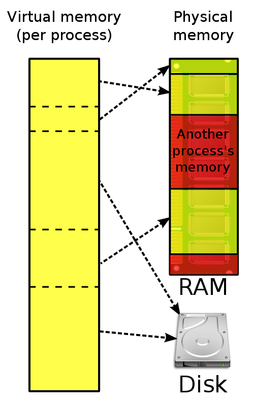

System Hardware & 计算机体系结构
CPU
The CPU has several layers of cache between it and main memory (RAM), because even accessing main memory is too slow.
The closer the cache is to the CPU, the faster it is and the smaller it is. L1 cache is small and very fast, and right next to the core that uses it. L2 is bigger and slower, and still only used by a single core. L3 is more common with modern multi-core machines, and is bigger again, slower again, and shared across cores on a single socket. Finally you have main memory, which is shared across all cores and all sockets.
| Latency from CPU to… | Approx. number of CPU cycles | Approx. time in nanoseconds |
|---|---|---|
| Main memory | ~60-80ns | |
| QPI transit (between sockets, not drawn) | ~20ns | |
| L3 cache | ~40-45 cycles, | ~15ns |
| L2 cache | ~10 cycles, | ~3ns |
| L1 cache | ~3-4 cycles, | ~1ns |
| Register | 1 cycle |


(1) Cache lines
Now the interesting thing to note is that it’s not individual items that get stored in the cache - i.e. it’s not a single variable, a single pointer. The cache is made up of cache lines, typically 64 bytes, and it effectively references a location in main memory. A Java long is 8 bytes, so in a single cache line you could have 8 long variables.

参考 Dissecting the Disruptor: Why it’s so fast (part two) - Magic cache line padding
线程
It is a basic Law of Computing that given a single CPU resource, executing A and B sequentially will always be faster than executing A and B “simultaneously” through time-slicing. Once the number of threads exceeds the number of CPU cores, you’re going slower by adding more threads, not faster.
Don’t be tricked into thinking, “SSDs are faster and therefore I can have more threads”. That is exactly 180 degrees backwards. Faster, no seeks, no rotational delays means less blocking and therefore fewer threads [closer to core count] will perform better than more threads. More threads only perform better when blocking creates opportunities for executing.
False Sharing
多个线程修改共享一个 Cache Line 的独立变量的时候，会造成这个 Cache Line 中的其他变量缓存失效，这被称之为 False sharing

在核心 1 上运行的线程想更新变量 X，同时核心2上的线程想要更新变量 Y。不幸的是，这两个变量在同一个缓存行中。每个线程都要去竞争缓存行的所有权来更新变量。如果核心 1 获得了所有权，缓存子系统将会使核心 2 中对应的缓存行失效。当核心 2 获得了所有权然后执行更新操作，核心 1 就要使自己对应的缓存行失效。这会来来回回的经过 L3 缓存，大大影响了性能。如果互相竞争的核心位于不同的插槽，就要额外横跨插槽 (socket interconnect) 连接，问题可能更加严重。

False sharing occurs when threads on different processors modify variables that reside on the same cache line. This invalidates the cache line and forces a memory update to maintain cache coherency.
(1) Java 6 通过填充缓存行 (padding the cache) 来避免:
|
|
(2) Java 7
It seems Java 7 got clever and eliminated or re-ordered the unused fields, thus re-introducing false sharing.
|
|
(3) Java 8 通过声明 sun.misc.Contended 注解加启动参数 -XX:-RestrictContended 来搞定:
|
|
参考 Java8 中用 sun.misc.Contended 避免伪共享(false sharing)
位数
虽然 32 位使用较小的指针大小可以节约内存，但由于操作系统的寻址受限，它在缓冲区大小设置上存在固有的约束，理论上，每个进程在 32 为系统上的最大可用内存为 4GB，实际上在很多系统上这个数值很小。
磁盘
关于磁盘，你需要关注磁盘读延迟 (每次读访问需要多长时间) 和 fsync 延迟 (每个 fsync 耗时多少)，大多数存储引擎是针对硬盘读写优化的，所以不要指望固态硬盘能够出现什么性能上的奇迹。
Hd(0,0)is the 1st partition of the 1st physical disk.Hd(0,1)is the 2nd partition of the 1st physical disk.
I believe that
|
|
so on etc. etc. sdc = hd2 When it says sda1 that would be (hd0, 0) and sda2 (hd0, 1) and sda3 (hd0, 2) and sdb1 (hd1, 0) so on and so forth…
Hello World 的运行过程
信息的表示和处理
|
|
%.2x表示整数必须用至少两个数字的十六进制格式输出。
|
|
- 小端法:
21大端法:87 - 小端法:
21 43大端法:87 65 - 小端法:
21 43 65大端法:87 65 43 - 小端法:
21 43 65 87大端法:87 65 43 21
整数和浮点数的编码:
|
|
- 整数
12345的编码:39300000 - 浮点数
12345.0的编码:00e44046
|
|
你会发现整数和浮点数有一部分是交叉重复的。
位级运算一个常见用法就是实现掩码运算，表示从一个字中选出的位的集合。
0xFF表示一个字的低位字节x & 0xFF生成一个由x的最低有效字节组成的值，而其他字节置位0~0xFF表示8个最低位为0，而其余的位都是1~0生成一个全1的掩码，不管机器的字是多少。尽管对于一个 32 位的机器来说，同样的掩码可以写成0xFFFFFFFF，但是这样的代码是不可移植的。
实际中较为常用的几种模式：
x的最低有效字节，其他位均置位0:x &0xFF- 除了
x的最低有效字节外，其他的位都取补，最低有效字节保持不变:x ^ ~0xFF x的最低有效字节设置成全1，其他字节保持变:x | 0xFF
对于 0x87 ([10000111]) 来说，不同的移位操作:
x << 3:[00111000]x >> 2 (逻辑):[00100001]x >> 2 (算术):[11100001]
反汇编器是一种将可执行程序文件转换回可读性更好的 ASCII 码形式的程序。这些文件包含许多十六进制数字，都是用典型的补码形式来表示这些值。能够认识这些数字并理解它们的意义 (例如，它们是正数还是负数)，是一项重要的技能:
|
|
81 ec b8 01 00 00 是一条指令的字节级表示，取出后 4 个字节 b8 01 00 00 按照相反的顺序写出来，我们得到 00 00 01 b8，这就是等价的十进制 440。
|
|
58 fe ff ff 相反顺序:
|
|
|
|
参数 length 是无符的，计算 0-1 将进行无符号运算，这等价于模数加法。结果得到 unsigned max，任何数都是小于或者等于 unsigned max 的，所以这个比较总是真！
|
|
阅读下面这个小测试:
|
|
|
|
size_t 在 32 位机器上典型的被定义为 unsigned int，看下面这个示例:
|
|
%lufor unsigned long%llufor unsigned long long
虚拟内存 Virtual Memory
In computing, virtual memory (also virtual storage) is a memory management technique (内存管理技巧) that provides an “idealized abstraction of the storage resources that are actually available on a given machine” which “creates the illusion to users of a very large (main) memory.” (给用户一种我有很大内存的感觉)
Virtual memory combines active RAM and inactive memory on DASD to form a large range of contiguous addresses.

Address translation hardware (地址转换硬件) in the CPU, often referred to as a memory management unit or MMU, automatically translates virtual addresses to physical addresses.
Interrupt 中断
In system programming, an interrupt is a signal (信号) to the processor (处理器) emitted by hardware or software (硬件或者软件发出的) indicating an event that needs immediate (立即处理) attention. The processor responds by suspending (挂起) its current activities, saving its state, and executing a function called an interrupt handler (中断回调) (or an interrupt service routine, ISR) to deal with the event. This interruption is temporary, and, after the interrupt handler finishes, the processor resumes (恢复) normal activities.
Types of interrupts:
(1) Level-triggered (电平触发，也被称为条件触发): A level-triggered interrupt is an interrupt signaled by maintaining the interrupt line at a high or low logic level. 电平触发是在高或低电平保持的时间内触发。只要满足条件，就触发一个事件(只要有数据没有被获取，内核就不断通知你)
(2) Edge-triggered (边沿触发): An edge-triggered interrupt is an interrupt signalled by a level transition on the interrupt line, either a falling edge (high to low) or a rising edge (low to high). 边沿触发是由高到低或由低到高这一瞬间触发。每当状态变化时，触发一个事件。